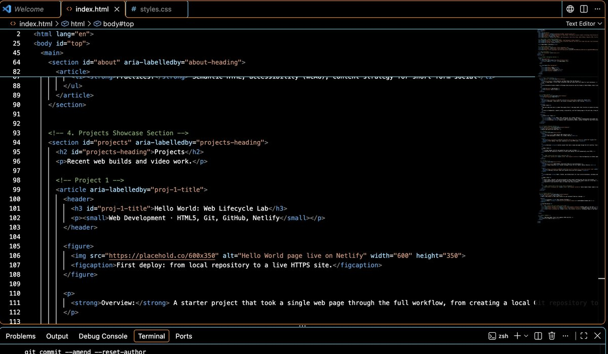
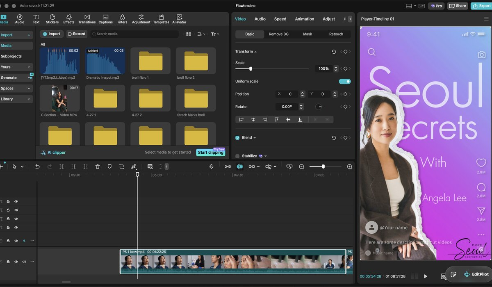

Hi, I'm Baye Mbodj. I write clean, accessible code and create short-form video for local businesses.
I'm an Information Science student at Michigan State University and the founder of ByBrillMedia, where I plan, film, and edit social content for service businesses in the Lansing area.
Developer, video editor, and content strategist based in East Lansing.
How I Work
Code and video have more in common than people think. A web page needs clear structure so anyone can navigate it. A short video needs tight pacing so viewers don't scroll past it. In both, if the audience gets lost, the work isn't finished.
I focus on fundamentals: semantic markup, accessibility, and fast-loading pages on the web side; strong hooks, clean edits, and clear messaging on the video side.
Video: Final Cut Pro, DaVinci Resolve, CapCut, iPhone cinematography with gimbal and wireless audio
Practices: Semantic HTML, accessibility (WCAG), content strategy for short-form social
Projects
Recent web builds and video work.
Hello World: Web Lifecycle Lab
Web Development · HTML5, Git, GitHub, Netlify

Writing semantic, accessible HTML in VS Code.
Overview: A starter project that took a single web page through the full workflow, from creating a local Git repository to publishing it live on Netlify.
What I Did
Tracked changes with Git and pushed the source code to GitHub.
Connected the repository to Netlify so every push deploys the site automatically over HTTPS.
ByBrillMedia: Short-Form Video for Local Businesses
Video Production & Content Strategy · Final Cut Pro, CapCut, DaVinci Resolve

Editing a vertical client video in CapCut.
Overview: Reels, TikToks, and YouTube Shorts for local service businesses, including real estate, retail, and personal brands. I handle strategy, filming, and editing.
What I Did
Built hooks, captions, and pacing designed to keep viewers watching past the first few seconds.
Used layered effects like pop-out subjects and cutout titles to make videos stand out in the feed.
Exported for each platform's specs so videos stay sharp on phones.